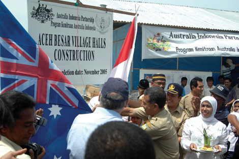
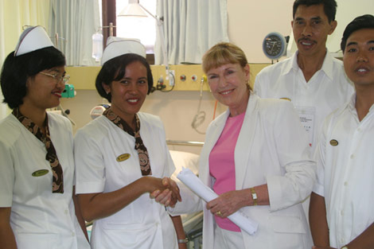
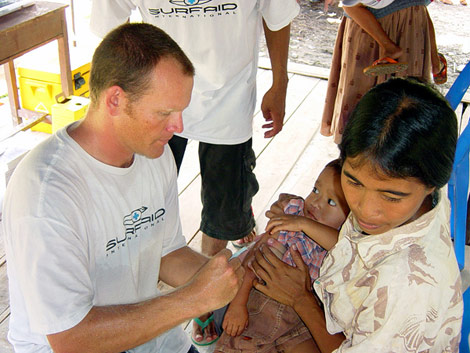

Kemitraan Australia – Indonesia
 Dari Brendon:
Dari Brendon:
|  |
| Reproduced with the permission of AusAID and Focus Magazine 2005 |
I did some research on the aid projects in Indonesia that Australia is involved in. Each year in the federal budget some money is allocated for foreign aid, some of which is used to fund various aid agencies.
Pemerintah
| Reproduced with the permission of AusAID |
There are projects that are initiated and supported by the Australian government. The first place I looked for general information about Australian aid activities in Indonesia was the government AusAID website. (AusAID manages government to government aid programs with other countries.)
There are also a number of projects listed by the Australia-Indonesia Institute, which is part of the Department of Foreign Affairs and Trade. One of the most interesting is the Australia-Indonesia Youth Exchange Program, which involves cultural exchange and work experience (usually development work for the Australian participants) for Australians and Indonesians aged between 20 and 25. I’m going to apply as soon as I hit 20!
Organisasi Non Pemerintah (Ornop)
|  |
| Reproduced with the permission of Dominic Morice and AusAID |
There are so many non-government organisations (NGOs) and so many causes: from orang utans to deforestation, street kids to orphanages... You could explore forever!
I guess one of the best known organisations is Australian Volunteers International, where professionals volunteer to go and live and work overseas in an area of need for a local wage. One of my old high school teachers has gone over to Indonesia and is working in Yogya at the moment, helping out at the local university with teacher training.
Komentar
 Re: Kemitraan Australia-Indonesia, dari Ibu_Indah pada jam 07:42.
Re: Kemitraan Australia-Indonesia, dari Ibu_Indah pada jam 07:42.
|  |
| Reproduced with the permission of Rob Walker and AusAID |
Australia is a member of UN, which has an expectation that its members help one another out in times of trouble. When the 2004 tsunami happened, many Australians volunteered to be part of the relief effort. It was wonderful to see the number of doctors, engineers, tradespeople and so on who volunteered their time, many even paying their own way to help out. There was also a contingent from the armed forces who helped out with relief efforts. However, I remember seeing a documentary showing an Australian doctor trying to advise some villagers on health issues in Aceh. As all the infrastructure had been destroyed, they found it hard to get clean water and so on. Unfortunately, this doctor could barely communicate the basic information the people needed as she had very little Indonesian and the locals had very little English. I remember thinking that even my Year 9 class could have helped out as interpreters!
Have a look at the AusAID and Australia-Indonesia Institute websites, and choose three projects in Indonesia. Explain briefly what the project is (a sentence or two in Indonesian will do), and why you think it’s important.
Komentar
 Re: Kemitraan Australia-Indonesia, dari IndoGuRu pada jam 10:34.
Re: Kemitraan Australia-Indonesia, dari IndoGuRu pada jam 10:34.
Ada banyak LSM (Lembaga Swadaya Masyarakat) di Indonesia juga. Apalagi perusahaan di Indonesia juga membuktikan kepedulian sosial atau social consciousness -nya dengan mendukung beberapa program pembangunan atau aid. Sama dengan di Australia, ya kan? Misalnya, stasiun penyiaran Indosiar ada program lengkap disebut ‘Kita Peduli’. Carilah di situs webnya: www.indosiar.com